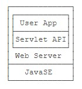

Java Inbox
Table of Contents
→ 摘录自廖雪峰老师的 https://www.liaoxuefeng.com/wiki/1252599548343744
面向对象
模块
为什么需要模块？
.class 文件是 JVM 看到的最小可执行文件，jar 是用于存放 class 的容器，它并不关心 class 之间的依赖。
从Java 9开始引入了自带“依赖关系”的 class 容器 – 模块 。
如何编写模块呢？

仅仅在 src 目录下多了一个 module-info.java 这个文件，这就是模块的描述文件。如：
1: module hello.world { 2: requires java.base; // 可不写，任何模块都会自动引入java.base 3: requires java.xml; 4: }
*当我们使用模块声明了依赖关系后，才能使用引入的模块。
模块有什么用？
我们可以用它来打包 JRE ！
模块进一步隔离了代码的访问权限，只有它声明的导出的包，外部代码才被允许访问。
Maven
Maven 是一个 Java 项目管理和构建工具，它可以定义 项目结构 、 项目依赖 ，并且用统一的方式进行 自动化构建 （编译、测试、打包、发布……）。
为什么需要 Maven
一个 Java 项目需要什么？
首先，确定 目录结构 。
其次，我们需要确定 引入哪些依赖包 ，并把它们加入 classpath 。
此外，还需要配置环境，例如 JDK 的版本，编译打包的流程，当前代码的版本号。
如果你不使用 IDE ，那么我们就不得不使用命令行工具进行编译，才能够让项目在一个独立的服务器上编译、测试、部署。
这些工作难度不大，但是非常琐碎且耗时。如果每一个项目都自己搞一套配置，肯定会一团糟。我们需要的是一个标准化的Java项目管理和构建工具。
Maven 项目结构
项目的根目录 a-maven-project 是项目名，它有一个项目描述文件 pom.xml ，存放 Java 源码的目录是 src/main/java ，存放资源文件的目录是 src/main/resources ，存放测试源码的目录是 src/test/java ，存放资源的目录是 src/test/resources ，最后，所有编译、打包生成的文件都放在 target 目录里。
所有的目录结构都是约定好的标准结构，我们千万不要随意修改目录结构。使用标准结构不需要做任何配置，Maven 就可以正常使用。
项目描述文件
POM( Project Object Model，项目对象模型 ) 是 Maven 工程的基本工作单元，是一个 XML 文件，包含了项目的基本信息，用于描述项目如何构建，声明项目依赖，等等。
执行任务或目标时，Maven 会在当前目录中查找 POM。它读取 POM，获取所需的配置信息，然后执行目标。
所有 POM 文件都需要 project 元素和三个必需字段： groupId，artifactId，version 。
1: <project xmlns = "http://maven.apache.org/POM/4.0.0" 2: xmlns:xsi = "http://www.w3.org/2001/XMLSchema-instance" 3: xsi:schemaLocation = "http://maven.apache.org/POM/4.0.0 4: http://maven.apache.org/xsd/maven-4.0.0.xsd"> 5: 6: <!-- 模型版本 --> 7: <modelVersion>4.0.0</modelVersion> 8: <!-- 公司或者组织的唯一标志，并且配置时生成的路径也是由此生成， 9: 如com.companyname.project-group， 10: maven会将该项目打成的jar包放本地路径：/com/companyname/project-group --> 11: <groupId>com.companyname.project-group</groupId> 12: 13: <!-- 项目的唯一ID，一个groupId下面 _可能多个项目_，就是靠artifactId来区分的 --> 14: <artifactId>project</artifactId> 15: 16: <!-- 版本号 --> 17: <version>1.0</version> 18: </project>
Super POM
所有的 POM 都继承自一个 父 POM（Super POM） （无论是否显式定义了这个父 POM）。
父 POM 包含了一些可以被继承的默认设置，使用 mvn help:effective-pom 命令来查看 Super POM 默认配置。
Maven 使用
effective pom（Super pom 加上工程自己的配置）来执行相关的目标，它帮助开发者在pom.xml中做尽可能少的配置，当然这些配置可以被重写。
你可以看到 Maven 在执行目标时需要用到的默认工程源码目录结构、输出目录、需要的插件、仓库和报表目录。
详细的 pom.xml 配置请查看 https://www.runoob.com/maven/maven-pom.html
Maven 依赖
1: <project...> 2: ... 3: <dependencies> 4: <dependency> 5: <groupId>commons-logging</groupId> 6: <artifactId>commons-logging</artifactId> 7: <version>1.2</version> 8: </dependency> 9: ... 10: </dependencies> 11: </project>
使用 <dependency> 声明一个依赖后，Maven 就会自动下载这个依赖包并把它放到 classpath 中。 Maven使用 groupId，artifactId 和 version 唯一定位一个依赖。
依赖管理
Maven 的第一个作用就是解决依赖管理。我们声明了自己的项目需要 abc ，Maven会自动导入 abc 的 jar包，再判断出 abc 需要 xyz ，又会自动导入 xyz 的jar包 ……
如果我们自己去手动管理这些依赖是非常费时费力的，而且出错的概率很大。
依赖关系
Maven定义了几种依赖关系，分别是 compile、test、runtime 和 provided 。
默认的 compile 是最常用的，Maven会把这种类型的依赖直接放入 classpath 。
test 依赖表示仅在测试时使用，正常运行时并不需要，如 JUnit 。
runtime 依赖表示编译时不需要，但运行时需要。最典型的 runtime 依赖是 JDBC 驱动，例如 MySQL驱动。
provided 依赖表示编译时需要，但运行时不需要。最典型的 provided 依赖是 Servlet API ，编译的时候需要，但是运行时，Servlet服务器内置了相关的 jar，所以运行期不需要。
搜索第三方组件
通过 search.maven.org 搜索关键字，找到对应的组件后，直接复制。
Maven 镜像
中国区用户可以使用阿里云提供的 Maven 镜像仓库。使用 Maven 镜像仓库需要一个配置，在用户主目录下进入 .m2 目录，创建一个 settings.xml 配置文件，内容如下：
1: <settings> 2: <mirrors> 3: <mirror> 4: <id>aliyun</id> 5: <name>aliyun</name> 6: <mirrorOf>central</mirrorOf> 7: <!-- 国内推荐阿里云的Maven镜像 --> 8: <url>https://maven.aliyun.com/repository/central</url> 9: </mirror> 10: </mirrors> 11: </settings>
TODO 构建流程
……
TODO 多线程
线程和进程
进程和线程的关系就是：一个进程可以包含一个或多个线程，但至少会有一个线程。

操作系统调度的最小任务单位其实不是进程，而是线程。
相对进程来说，创建线程开销小、通信快（线程间通信就是读写同一个变量）。多进程的好处在于稳定性好，一个进程崩溃不会影响其他进程。
Java 语言内置了多线程的支持：一个 Java 程序实际上是一个 JVM 进程，JVM 进程用一个主线程来执行 main() 方法，在 main() 方法内部，我们又可以启动多个线程。此外，JVM 还有负责垃圾回收的其他工作线程等。
因此，对于大多数Java程序来说，我们说多任务，实际上是说如何使用多线程实现多任务。
Java多线程编程的特点又在于：
- 多线程模型是Java程序最基本的并发模型；
- 后续读写网络、数据库、Web开发等都依赖Java多线程模型。
创建新线程
要创建一个新线程非常容易，我们需要实例化一个 Thread 实例，然后调用它的 start() 方法：
1: public class Main { 2: public static void main(String[] args) { 3: Thread t = new Thread(); 4: t.start(); // 启动新线程 5: } 6: }
但是这个线程启动后实际上什么也不做就立刻结束了。
我们希望新线程能执行指定的代码，有以下几种方法：
- 从
Thread派生一个自定义类，然后覆写run()方法； - 创建
Thread实例时，传入一个Runnable实例； - 或用Java8引入的 lambda语法。
小结：
- Java用
Thread对象表示一个线程，通过调用start()启动一个新线程；- 一个线程对象只能调用一次
start()方法；- 线程的执行代码写在
run()方法中；- 线程调度由操作系统决定，程序本身无法决定调度顺序。
线程的状态
在Java程序中，一个线程对象只能调用一次 start() 方法启动新线程，并在新线程中执行 run() 方法。一旦 run() 方法执行完毕，线程就结束了。

如图所示，Java线程的状态有以下几种：
- New：新创建的线程，尚未执行；
- Runnable：运行中的线程，正在执行
run()方法的Java代码； - Blocked：运行中的线程，因为某些操作被阻塞而挂起；
- Waiting：运行中的线程，因为某些操作在等待中；
- Timed Waiting：运行中的线程，因为执行
sleep()方法正在计时等待； - Terminated：线程已终止，因为
run()方法执行完毕。
当线程启动后，它可以在 Runnable、Blocked、Waiting 和 Timed Waiting 这几个状态之间切换，直到最后变成 Terminated 状态，线程终止。
线程终止的原因有：
- 线程正常终止：
run()方法执行到return语句返回； - 线程意外终止：
run()方法因为未捕获的异常导致线程终止； - 对某个线程的 Thread实例调用
stop()方法强制终止（强烈不推荐使用）。
通过对另一个线程对象调用 join() 方法可以等待其执行结束,对已经运行结束的线程调用 join() 方法会立刻返回。
中断线程
main 线程通过调用 t.interrupt() 方法中断 t 线程，但是要注意， interrupt() 方法仅仅向 t 线程发出了“中断请求”，至于 t 线程是否能立刻响应，要看具体代码。
小结：
对目标线程调用
interrupt()方法可以请求中断一个线程，目标线程通过检测isInterrupted()标志获取自身是否已中断。如果目标线程处于等待状态，该线程会捕获到InterruptedException；目标线程检测到
isInterrupted()为true或者捕获了InterruptedException都应该立刻结束自身线程；通过标志位判断需要正确使用
volatile关键字；=volatile= 关键字解决了共享变量在线程间的可见性问题。
守护进程
守护线程是指为其他线程服务的线程。在JVM中，所有非守护线程都执行完毕后，无论有没有守护线程，虚拟机都会自动退出。
如何创建守护线程呢？方法和普通线程一样，只是在调用 start() 方法前，调用 setDaemon(true) 该线程标记为守护线程：
1: Thread t = new MyThread(); 2: t.setDaemon(true); 3: t.start();
在守护线程中，编写代码要注意：守护线程不能持有任何需要关闭的资源，例如打开文件等，因为虚拟机退出时，守护线程没有任何机会来关闭文件，这会导致数据丢失。
线程同步
当多个线程同时运行时，线程的调度由操作系统决定，程序本身无法决定。这个时候，有个单线程模型下不存在的问题就来了：如果多个线程同时读写共享变量，会出现数据不一致的问题。
多线程模型下，要保证逻辑正确，对共享变量进行读写时，必须保证一组指令以 原子方式 执行：即某一个线程执行时，其他线程必须等待。
*原子操作是指不能被中断的一个或一系列操作。
如，对于语句 n = n + 1; ，看上去是一行语句，实际上对应了 3 条指令：
ILOAD IADD ISTORE

✘

✔
通过加锁和解锁的操作，就能保证 3 条指令总是在一个线程执行期间，不会有其他线程会进入此指令区间。
即使在执行期线程被操作系统中断执行，其他线程也会因为无法获得锁导致无法进入此指令区间。只有执行线程将锁释放后，其他线程才有机会获得锁并执行。这种加锁和解锁之间的代码块我们称之为 临界区 （Critical Section） ，任何时候临界区最多只有一个线程能执行。
可见，保证一段代码的原子性就是通过加锁和解锁实现的。
Java程序使用 synchronized 关键字对一个对象进行加锁， synchronized 保证了代码块在任意时刻最多只有一个线程能执行。
如何使用 synchronized ：
- 找出修改共享变量的线程代码块；
- 选择一个共享实例作为锁；
- 使用
synchronized(lockObject) { ... }。
*因为 synchronized 代码块无法并发执行。此外，加锁和解锁需要消耗一定的时间，所以， synchronized 会降低程序的执行效率。
JVM 只保证同一个锁在任意时刻只能被一个线程获取，但两个不同的锁在同一时刻可以被两个线程分别获取。因此，使用 synchronized 的时候，获取到的是哪个锁非常重要。锁对象如果不对，代码逻辑就不对。
小结：
- 多线程同时读写共享变量时，会造成逻辑错误，因此需要通过
synchronized同步；- 同步的本质就是给指定对象加锁，加锁后才能继续执行后续代码；
- 注意加锁对象必须是同一个实例；
- 对 JVM 定义的单个原子操作不需要同步。
同步方法
让线程自己选择锁对象往往会使得代码逻辑混乱，也不利于封装，更好的方法是把 synchronized 逻辑封装起来。如下：
1: public class Counter { 2: private int count = 0; 3: 4: public void add(int n) { 5: synchronized(this) { 6: count += n; 7: } 8: } 9: 10: public void dec(int n) { 11: synchronized(this) { 12: count -= n; 13: } 14: } 15: 16: public int get() { 17: return count; 18: } 19: }
如此，线程调用 add() 、 dec() 方法时，它不必关心同步逻辑，因为 synchronized 代码块在 add() 、 dec() 方法内部。并且， synchronized 锁住的对象是 this ，即当前实例，这又使得创建多个 Counter 实例的时候，它们之间互不影响，可以并发执行。
如果一个类被设计为允许多线程正确访问，我们就说这个类就是“线程安全”的（thread-safe）。
*没有特殊说明时，一个类默认是非线程安全的。
当我们锁住的是 this 实例时，实际上可以用 synchronized 修饰这个方法。下面两种写法是等价的：
1: public void add(int n) { 2: synchronized(this) { // 锁住this 3: count += n; 4: } // 解锁 5: } 6: 7: // 等价于 8: 9: public synchronized void add(int n) { // 锁住this 10: count += n; 11: } // 解锁
因此，用 synchronized 修饰的方法就是同步方法，它表示整个方法都必须用 this 实例加锁。
Web 开发
JavaEE
JavaEE 是完全基于JavaSE，只是多了一大堆服务器相关的库以及 API 接口。所有的 JavaEE 程序，仍然是运行在标准的 JavaSE 的虚拟机上的。
JavaEE 并不是一个软件产品，它更多的是一种软件架构和设计思想。我们可以把 JavaEE 看作是在 JavaSE 的基础上，开发的一系列基于服务器的组件、API标准和通用架构。
JavaEE 最核心的组件就是基于 Servlet标准的Web服务器 （如 Tomcat），开发者编写的应用程序是基于 Servlet API 并运行在 Web服务器内部的。
目前流行的基于 Spring 的轻量级 JavaEE 开发架构，使用最广泛的是 Servlet 和 JMS ，以及一系列开源组件。
Web 基础
HTTP 协议（需要单独深入一下）
HTTP 协议是一个基于 TCP 协议之上的请求-响应协议。
通常浏览器获取的 第一个资源 是 HTML 网页，在网页中，如果嵌入了 JavaScript、 CSS、图片、视频等其他资源，浏览器会根据资源的URL再次向服务器请求对应的资源。
如何编写 HTTP Server ？
一个 HTTP Server 本质上是一个 TCP 服务器，我们可以用 TCP 编程的多线程来实现一个服务器端框架。
Servlet
我们看到，编写 HTTP 服务器其实是非常简单的，只需要先编写基于多线程的 TCP 服务，然后在一个 TCP 连接中读取 HTTP 请求，发送 HTTP 响应即可。
但是，要编写一个完善的HTTP服务器，需要考虑好多方面，经过长期测试才能稳定运行。
因此，在 JavaEE 平台上，处理 TCP 连接，解析 HTTP 协议这些底层工作统统扔给现成的 Web 服务器去做，我们只需要把自己的应用程序跑在 Web 服务器上。
为了实现这一目的， JavaEE 提供了 Servlet API ， Web 服务器实现 Servlet API 接口 ，实现底层功能。 我们使用 Servlet API 编写自己的 Servlet 来处理 HTTP 请求。
一个 Servlet 总是继承自 HttpServlet ，然后覆写 doGet() 或 doPost() 方法。它们接收 HttpServletRequest 和 HttpServletResponse 两个对象做为参数，分别代表 HTTP 请求和响应。
我们使用 Servlet API 时，并不直接与底层 TCP 交互，也不需要解析 HTTP 协议，因为 HttpServletRequest 和 HttpServletResponse 就已经封装好了请求和响应。以发送响应为例，我们只需要设置正确的响应类型，然后获取 PrintWriter ，写入响应即可。
Servlet API 是一个 jar 包，我们需要通过 Maven 来引入它，才能正常编译。
看一下伪示例的 pom.xml 文件如下：
1: <project...> 2: ... 3: <packaging>war</packaging> 4: ... 5: 6: <dependencies> 7: <dependency> 8: <groupId>javax.servlet</groupId> 9: <artifactId>javax.servlet-api</artifactId> 10: <version>4.0.0</version> 11: <scope>provided</scope> 12: </dependency> 13: </dependencies> 14: ... 15: </project>
注意 <packaging>war</packaging> ，打包的类型不是 jar ，而是 war ； <scope> 指定为 provided ，表示编译时使用，但不会打包到 .war 文件中，因为运行期 Web 服务器本身已经提供了 Servlet API 相关的 jar 包。
web.xml
我们还需要在工程目录下创建一个 web.xml 描述文件，放到 src/main/webapp/WEB-INF 目录下（固定目录结构，不要修改路径，注意大小写）。如：
运行 Maven 命令 mvn clean package ，在 target 目录下得到一个 hello.war 文件，这个文件就是我们编译打包后的 Web 应用程序。
我们应该如何运行这个 war 文件？
普通的 Java 程序是通过启动 JVM，然后执行 main() 方法开始运行。 但是 Web 应用程序有所不同， 我们无法直接运行 war 文件 ，必须先启动 Web 服务器，再由 Web 服务器加载我们编写的 HelloServlet ，这样就可以让 HelloServlet 处理浏览器发送的请求。
因此，我们首先要找一个支持 Servlet API 的 Web 服务器。常用的服务器有：
- Tomcat：由Apache开发的开源免费服务器；
- Jetty：由Eclipse开发的开源免费服务器；
- GlassFish：一个开源的全功能JavaEE服务器。
无论使用哪个服务器，只要它支持 Servlet API 4.0（因为我们引入的Servlet版本是4.0），我们的 war 包都可以在上面运行。
实际上，类似 Tomcat 这样的服务器也是 Java 编写的，启动 Tomcat 服务器实际上是启动 Java 虚拟机，执行 Tomcat 的
main()方法，然后由 Tomcat 负责加载我们的.war文件，并创建一个HelloServlet实例，最后以多线程的模式来处理 HTTP 请求。
因为我们编写的 Servlet 并不是直接运行，而是由 Web 服务器加载后创建实例运行，所以，类似 Tomcat 这样的 Web 服务器也称为 Servlet 容器 。
在 Servlet 容器中运行的 Servlet 具有如下特点：
- 无法在代码中直接通过
new创建Servlet实例，必须由 Servlet 容器自动创建 Servlet 实例； - Servlet 容器只会给每个 Servlet 类创建唯一实例；
- Servlet 容器会使用多线程执行
doGet()或doPost()方法。 - ……
- 在 Servlet 中定义的实例变量会被多个线程同时访问，要注意线程安全；
HttpServletRequest和HttpServletResponse实例是由 Servlet 容器传入的局部变量，它们只能被当前线程访问，不存在多个线程访问的问题；- 在
doGet()或doPost()方法中，如果使用了 ThreadLocal，但没有清理，那么它的状态很可能会影响到下次的某个请求，因为 Servlet 容器很可能用线程池实现线程复用。
因此，正确编写 Servlet，要清晰理解 Java 的多线程模型，需要同步访问的必须同步。
Servlet 开发
一个完整的 Web 应用程序的开发流程如下：
- 编写 Servlet；
- 打包为 war 文件；
- 复制到 Tomcat 的 webapps 目录下；
- 启动 Tomcat。
许多初学者经常卡在如何在 IDE 中启动 Tomcat 并加载 webapp，更不要说断点调试了……
……
因为 Tomcat 实际上也是一个 Java 程序，我们看看 Tomcat 的启动流程：
- 启动 JVM 并执行 Tomcat 的
main()方法； - 加载 war 并初始化 Servlet；
- 正常服务。
启动 Tomcat 无非就是设置好 classpath 并执行 Tomcat 某个 jar 包的 main() 方法，我们完全可以 把 Tomcat 的 jar 包全部引入进来，然后自己编写一个 main() 方法 ，先启动 Tomcat，然后让它加载我们的 webapp 就行。
现在好了，SpringBoot 支持在
main()方法中一行代码直接启动 Tomcat 。
*开发 Servlet 时，推荐使用 main() 方法启动嵌入式 Tomcat 服务器并加载当前工程的 webapp，便于开发调试，且不影响打包部署，能极大地提升开发效率。